阅读词表
| 词条 | 拼音 | 类型 | 说明 |
|---|---|---|---|
| 台西 | tái xī | site_or_culture | 河北藁城商代遗址，文中作为商朝北方军事聚落。 |
| 张营 | zhāng yíng | site_or_culture | 北京昌平商代遗址，文中涉及食人遗存。 |
| 铜钺 | tóng yuè | bronze_item | 青铜钺，常象征军事权力。 |
| 殉人 | xùn rén | concept | 陪葬或随葬的人。 |
| 水牛 | shuǐ niú | concept | 商人畜牧和祭祀中涉及的家畜。 |
| 陶鬲 | táo lì | artifact | 三足陶炊器。 |
| 铜镞 | tóng zú | bronze_item | 青铜箭头。 |
| 祭祀坑 | jì sì kēng | concept | 用于祭祀或埋藏祭品的坑穴。 |
| 箭镞 | jiàn zú | artifact | 箭头，文中有青铜、石骨材质。 |
| 二层台 | èr céng tái | concept | 墓室内用于放置随葬品或殉人的台阶状结构。 |
| 铜戈 | tóng gē | bronze_item | 青铜戈，商周常见兵器。 |
| 夯筑 | hāng zhù | concept | 用夯打方式筑成墙体或台基。 |
| 奠基 | diàn jī | concept | 建筑开始时的基础工程或相关仪式。 |
| 人祭 | rén jì | concept | 以人作为祭品的祭祀行为。 |
| 灰坑 | huī kēng | concept | 遗址中含灰土、废弃物或祭祀遗存的坑穴。 |
| 北土 | běi tǔ | place | 文中指商朝北方边地。 |
| 殷墟 | yīn xū | site_or_culture | 晚商都邑遗址，甲骨卜辞的重要出土地。 |
| 麋鹿 | mí lù | rare_word | 生活于湿地的鹿科动物。 |
| 刖 | yuè | rare_word | 古代砍足或断小腿的刑罚。 |
| 敞厦 | chǎng shà | artifact | 一面或多面敞开的房屋空间。 |
| 人奠基 | rén diàn jī | concept | 建筑奠基时以人作为牺牲的行为。 |
| 肩胛骨 | jiān jiǎ gǔ | concept | 动物或人的肩部骨骼，常被加工为卜骨。 |
| 公共伙房 | gōng gòng huǒ fáng | concept | 供集体烹饪或酿酒的房屋。 |
| 盘庚 | pán gēng | person | 商王名，以迁都殷地著称。 |
| 妇好 | fù hǎo | person | 商王武丁配偶，甲骨文中著名女性军事人物。 |
| 藁城 | gǎo chéng | place | 今河北石家庄藁城区，台西遗址所在地。 |
| 獠牙 | liáo yá | rare_word | 外露的长牙，文中形容铜钺纹饰。 |
| 土坯 | tǔ pī | artifact | 未经烧制或低温处理的泥土砖块。 |
| 门楼 | mén lóu | artifact | 门上或门前的楼式建筑结构。 |
| 铜戟 | tóng jǐ | bronze_item | 青铜戟，戈与矛结合的兵器。 |
| 石钺 | shí yuè | artifact | 石制钺，文中多作象征性随葬品。 |
| 卜骨 | bǔ gǔ | artifact | 用于占卜的兽骨。 |
| 石砭镰 | shí biān lián | artifact | 石制砭镰，文中推测为医用手术刀。 |
| 皱纹绢 | zhòu wén juàn | artifact | 带皱纹效果的丝织品。 |
| 铜瓿 | tóng bù | bronze_item | 青铜瓿，古代盛酒、水或酱料的器皿。 |
| 半地穴式 | bàn dì xué shì | concept | 部分低于地面的房屋形式。 |
| 基槽 | jī cáo | concept | 建筑墙基开挖的沟槽。 |
| 巫医 | wū yī | concept | 兼具巫术占卜和治疗职能的人。 |
| 冶铁 | yě tiě | concept | 从铁矿石中冶炼铁的技术。 |
| 锻铁 | duàn tiě | concept | 锻打铁料或铁器的技术。 |
| 陨铁 | yǔn tiě | concept | 来自陨石的铁。 |
| 芦苇荡 | lú wěi dàng | rare_word | 大片芦苇生长的水边湿地。 |
| 草莽 | cǎo mǎng | rare_word | 荒草丛生之地，也可指边远荒野。 |
| 草木樨 | cǎo mù xī | rare_word | 豆科植物，文中作为植物遗存。 |
| 瘪裆 | biě dāng | rare_word | 陶鬲等器物裆部低瘪的形态描述。 |
| 椽子 | chuán zi | artifact | 屋顶承托瓦草等材料的木构件。 |
| 铜觚 | tóng gū | bronze_item | 青铜觚，古代饮酒器。 |
| 铜爵 | tóng jué | bronze_item | 青铜酒器爵。 |
| 铜斝 | tóng jiǎ | bronze_item | 青铜斝，古代三足酒器。 |
| 羽箭 | yǔ jiàn | artifact | 带尾羽的箭。 |
| 铸铜范 | zhù tóng fàn | artifact | 铸造铜器所用的范模。 |
| 骨锥 | gǔ zhuī | artifact | 用骨头制成的尖锥形工具。 |
| 石锛 | shí bēn | artifact | 石制锛，常见新石器和青铜时代木工工具。 |
| 商式陶器 | shāng shì táo qì | artifact | 具有商文化风格的陶器。 |
| 窖穴 | jiào xué | concept | 地下储藏坑穴。 |
| 人殉 | rén xùn | concept | 以人随葬或陪葬的行为。 |
| 腰坑殉狗 | yāo kēng xùn gǒu | concept | 墓穴腰部小坑中埋狗的商人葬俗。 |
| 族邑 | zú yì | concept | 以部族为单位聚居形成的城邑或聚落。 |
| 三牲 | sān shēng | concept | 猪、牛、羊等祭祀牲畜组合。 |
| 熟铁 | shú tiě | concept | 含碳量较低、可锻造的铁。 |
| 胫骨 | jìng gǔ | concept | 小腿内侧长骨。 |
| 刖刑 | yuè xíng | concept | 砍足或断小腿的刑罚。 |
| 铜锡合金 | tóng xī hé jīn | concept | 铜和锡组成的青铜合金。 |
| 敲骨吸髓 | qiāo gǔ xī suǐ | concept | 敲碎骨头吸食骨髓的行为。 |
| 二里冈文化 | èr lǐ gāng wén huà | 项目词典 | 早商时期中原考古文化。 |
| 匪夷所思 | fěi yí suǒ sī | 项目词典 | 超出常理，难以想象。 |
| 藁城台西 | gǎo chéng tái xī | 项目词典 | 河北藁城商代遗址。 | 河北石家庄附近商代遗址。 |
| 郑州商城 | zhèng zhōu shāng chéng | 项目词典 | 商代早期大型城址。 |
| 二里冈 | èr lǐ gāng | 项目词典 | 郑州一带早商文化的重要遗址和文化命名地。 |
| 盘龙城 | pán lóng chéng | 项目词典 | 湖北武汉附近早商城址，是商朝南方重要据点。 | 湖北武汉附近早商城址，文中作为商朝南方据点。 |
| 老牛坡 | lǎo niú pō | 项目词典 | 西安附近商代遗址，文中涉及商人据点和人祭。 | 陕西西安商代遗址。 |
| 铜礼器 | tóng lǐ qì | 项目词典 | 用于礼仪或祭祀的青铜器。 |
| 冶炼 | yě liàn | 项目词典 | 用高温从矿石中提炼金属。 |
| 冶铸 | yě zhù | 项目词典 | 冶炼并铸造金属器物。 | 冶炼和铸造金属器物的工艺。 |
| 卜辞 | bǔ cí | 项目词典 | 甲骨占卜后刻写或记录的辞句。 | 甲骨上记录占卜的文字。 | 占卜时刻写或记录的辞句。 |
| 商族 | shāng zú | 项目词典 | 商王朝建立前后的族群共同体。 |
| 商王 | shāng wáng | 项目词典 | 商朝王。 |
| 土著 | tǔ zhù | 项目词典 | 本地原有居民或族群。 |
| 坑底 | kēng dǐ | 项目词典 | 坑穴底部，常用于描述考古遗迹。 | 坑穴底部。 |
| 基址 | jī zhǐ | 项目词典 | 建筑物遗留下来的基础位置。 |
| 填土 | tián tǔ | 项目词典 | 填入坑穴或遗迹中的土层。 |
| 夯土 | hāng tǔ | 项目词典 | 把土层层夯实形成建筑基础或城墙的技术。 |
| 局促 | jú cù | 项目词典 | 狭小、不舒展。 |
| 巫术 | wū shù | 项目词典 | 古代借助神秘仪式影响现实的信仰行为。 | 借助神秘仪式影响现实的信仰行为。 |
| 战俘 | zhàn fú | 项目词典 | 战争中捕获的人。 |
| 捆绑 | kǔn bǎng | 项目词典 | 用绳索等束缚身体。 |
| 族徽 | zú huī | 项目词典 | 族群标识，常见于商周青铜器铭文。 |
| 有易 | yǒu yì | 项目词典 | 文献中与王亥牧牛、遇害相关的部落或地域。 |
| 殉葬 | xùn zàng | 项目词典 | 以人或物随葬。 |
| 殷商 | yīn shāng | 项目词典 | 商朝后期文化和政权。 | 商代后期以殷墟为中心的商王朝阶段。 |
| 殷都 | yīn dū | 项目词典 | 商朝后期都城区域，今安阳殷墟一带。 | 商朝后期都城区域。 | 晚商都城，通常指安阳殷墟。 |
| 淤积 | yū jī | 项目词典 | 泥沙等沉积、堆积。 |
| 版筑 | bǎn zhù | 项目词典 | 夹板填土后层层夯实的筑墙方法。 |
| 献祭 | xiàn jì | 项目词典 | 把祭品奉献给神灵或祖先。 | 向神灵、祖先等奉献祭品。 |
| 王亥 | wáng hài | 项目词典 | 先商重要首领，文献中与牧牛、有易事件相关。 | 商族先公，文中作为“高祖”的可能所指。 |
| 疆域 | jiāng yù | 项目词典 | 国家或政权控制、影响的地域范围。 |
| 石范 | shí fàn | 项目词典 | 用于铸造器物的石制模具。 |
| 碳化 | tàn huà | 项目词典 | 有机物受热或长期埋藏后变成含碳状态。 |
| 肋骨 | lèi gǔ | 项目词典 | 胸部骨骼。 |
| 股骨 | gǔ gǔ | 项目词典 | 大腿骨。 |
| 肢解 | zhī jiě | 项目词典 | 将肢体切割分解。 |
| 蛮荒 | mán huāng | 项目词典 | 荒远未开发。 |
| 觅食 | mì shí | 项目词典 | 寻找食物。 |
| 迁徙 | qiān xǐ | 项目词典 | 群体从一地迁移到另一地。 |
| 遗存 | yí cún | 项目词典 | 古代活动留下的遗物、遗迹或现象。 |
| 钝器 | dùn qì | 项目词典 | 无锋刃但可打击致伤的器物。 |
| 铜凿 | tóng záo | 项目词典 | 青铜凿，文中推测为可能造成穿孔的工具或兵器。 |
| 铜渣 | tóng zhā | 项目词典 | 冶炼或铸造铜器后留下的残渣。 |
| 铜矛 | tóng máo | 项目词典 | 青铜矛，刺击兵器。 |
| 铜鼎 | tóng dǐng | 项目词典 | 青铜鼎，古代炊煮或礼仪重器。 | 青铜鼎，礼器或炊器。 |
| 铭文 | míng wén | 项目词典 | 铸刻在青铜器等器物上的文字。 | 器物上铸刻或刻写的文字。 |
| 骨笄 | gǔ jī | 项目词典 | 骨制发簪。 | 骨制簪笄，用于束发。 |
青铜器词表
| 器名 | 拼音 | 类型 | 说明 |
|---|---|---|---|
| 钺 | yuè | bronze_item | 大型斧形兵器或礼器。 |
| 镞 | zú | bronze_item | 箭头。 |
| 戈 | gē | bronze_item | 古代横刃长柄兵器。 |
| 鬲 | lì | bronze_item | 古代煮食炊器。 |
| 豆 | dòu | bronze_item | 古代盛肉或食品的高足盘形器。 |
| 斝 | jiǎ | bronze_item | 古代青铜酒器，圆口三足。 |
| 觚 | gū | bronze_item | 古代饮酒器。 |
| 爵 | jué | bronze_item | 古代酒器，也引申为爵位。 |
| 瓿 | bù | bronze_item | 小瓮形器，可盛酒或水。 |
| 匕 | bǐ | bronze_item | 古代取食器，形似长柄浅勺。 |
章节导读札记
| 主题 | 札记 | 操作 |
|---|---|---|
| 暂无章节导读札记 | ||
用户札记
| 类型 | 页 | 内容 |
|---|---|---|
| 暂无用户札记 | ||
原书阅读器页 175原书物理 PDF 页 173印刷页 161
第九章3300年前的军营：台西
滹（hū）沱河从群山中流出，与黄河最下游的湿地融为一体。麋鹿在浅水草滩觅食，一旦受到惊吓，便会迅速藏身到芦苇荡中。
草莽和湿地中点缀着小小的农业聚落，农民住在狭窄的半地穴式窝棚里，种植谷子、豆类、麻和桑树，也捕鱼射鸟，采摘野果，用麻皮和桑蚕丝纺织衣物。按《禹贡》的说法，这里属于“鸟夷皮服”的蛮荒之地，但进入王朝时代后，也开始出现显贵的统治者。
在石家庄市东郊藁城县的台西村有一处商代遗址，是海沱河的冲积平原，有三座土丘高出地面数米，长约百余米，可以暂避周期性泛滥的洪水。土丘之上遍布商代遗迹，1973—1974年，考古队在其中的“西台”周边发掘了一批房屋和墓葬，就此，一个商代小型聚落逐渐被揭开了部分尘封的面纱。
在诸多商代考古遗址中，台西的规模很小，“知名度”也不算高，但它是商王朝权力体系最末梢的完整个案。可以说，关于商王朝如何统治幅员上千里的辽阔疆域，台西是最难得的缩影。[[fn:1]]
屋檐下的人头
发掘显示，最早在台西生活的是贫穷农夫，他们住在狭小的半地穴式窝棚里，使用石头和骨头做的农具，在地上挖掘不大的窖穴储存粮食，用粗糙的夹砂陶器烹煮食物。这种新石器时代的生活场景已经延续了数千年。
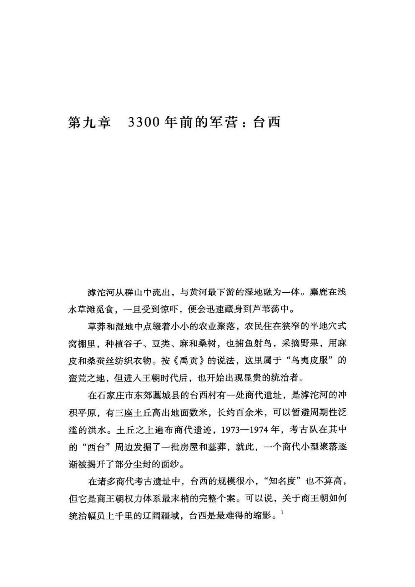
原书阅读器页 176原书物理 PDF 页 174印刷页 162
然后，一群使用青铜武器的外来者占据了台地，建立了对周边农业聚落的领导权。没有发掘到他们住的房子，但在西台土丘边挖到了他们的家族墓葬。
这是3300年前，商王朝已经建立近三百年。此前，商朝的统治中心一直在黄河之南，直到商王盘庚把王都迁到黄河北岸的殷地。迁都后，王朝需要调整防御圈，特别是要加强对蛮荒北方的防御，于是，一批批商人部族从殷都迁往北土，沿着太行山建立军事聚落。
来到石家庄台西的这几十名武士以及他们的家眷和仆从，要为王朝守卫海沱河南岸——新营建的殷都在南偏西方八百里外。这是一个和盘龙城完全不同的据点，更接近商王朝的常态。
这群武士在台西立足数十年，第三代人已经出世。之后，源沱河的一场大洪水淹没了一切，包括武士和农夫们的房屋，地势较高的墓区还淤积了一层厚厚的细土，夹杂着河蚌和田螺。
F2基址平面图（图）
当洪水褪去，武士们需要建设新居。这次他们把房址定在了西台边的高地。这里是他们的父辈和祖辈的墓地，不过现实的需求更重要，更何况，墓地已被覆盖在淤积的泥土之下。
发掘显示，青铜武士们认真考察了西台周边的地势，先是用白石粉划出新居墙壁的轮廓，接着平整土地，开挖基槽，夯筑起半米多厚的土墙，墙体用土坯垒砌，高2米以上（当地简陋的版筑技术似乎不支持筑太高），然后在土墙之上安放木头橡条和椽子，铺垫芦苇束，抹草拌泥，屋顶就宣告建成了。
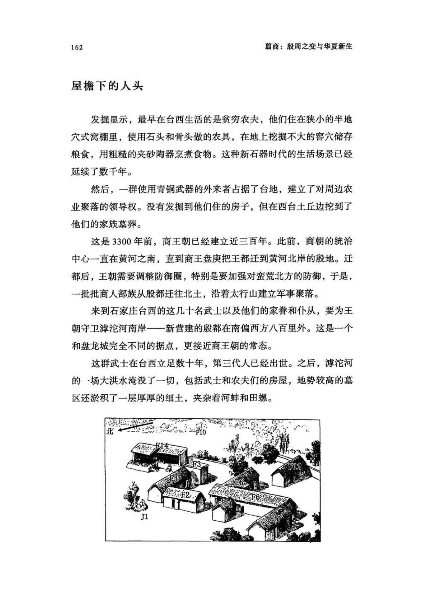
原书阅读器页 177原书物理 PDF 页 175印刷页 163
到这里，一切似乎都很自然，但考古发掘揭开了惊悚的一幕。
一座两间连体的房子（F2）西墙的基槽里，埋着一件陶罐，里面是一具不满三岁的幼儿尸骨。显然，这是给新房奠基的巫术，用幼儿向土地之神献祭，以保佑家宅平安。献祭的死者不止幼儿，朝东的屋前还有四座祭祀坑，其中三座各埋入一只猪、牛、羊，第四座坑（H104）埋的则是人。
H104的边长2米左右，方形，深约1.5米，底部埋有三人。一名十四岁的少年可能先被杀死，被扔在坑角；然后是两名成年男子，被捆住两腿扔进坑内，胳膊呈挣扎状，但尸骨并不在坑底部，而是弯曲在从20厘米到120厘米高的曲面上，说明当献祭者向坑内填土时，两名男子曾努力从土中蠕动钻出，直到力气耗尽，才被活埋。
从骨架姿势看，他们都是捆绑后被推入坑中活埋的。南侧的男子，三十五岁左右，两脚被捆，两手撑地，头仰起，呈挣扎反抗状；北侧的男子，年满二十五岁，两脚亦被捆绑，头朝下，两臂张开，亦呈挣扎反抗状。两具骨架几乎平行，可能是同时被推下坑的。
这座房子还有更匪夷所思的现象：在废弃后塌落的土坯中混杂着四枚人头骨，分别散落在东、西、南三面墙外。这些头骨没有被夯筑在土墙中，也没有埋在室内，这就只剩下一种可能性：它们被挂在室外的屋檐之下，最后随着房子的坍塌而被掩埋。
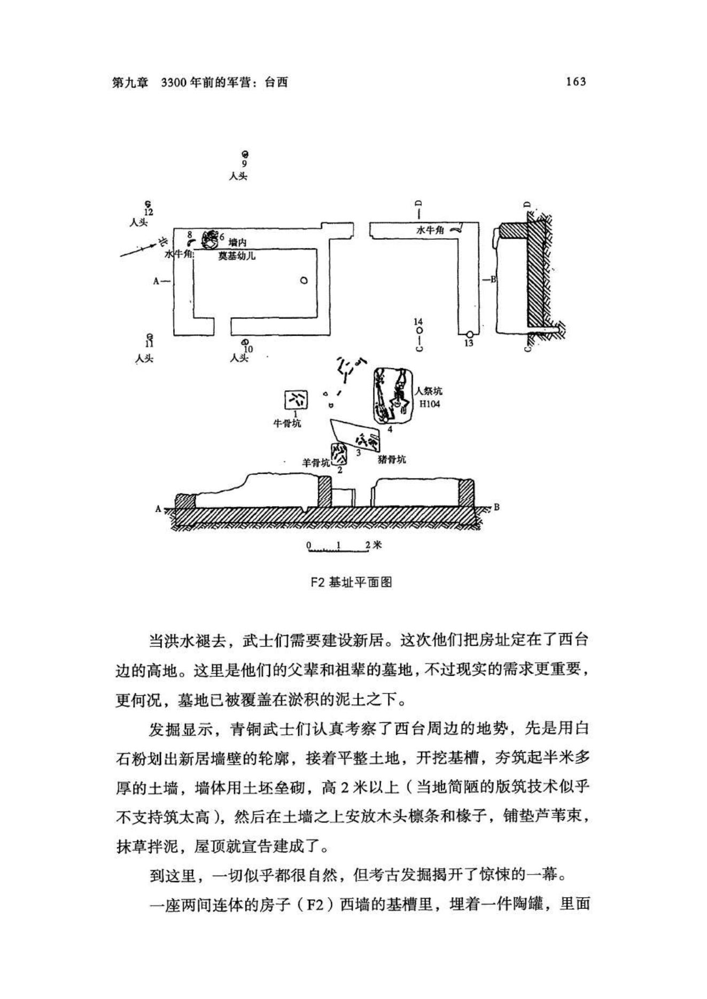
原书阅读器页 178原书物理 PDF 页 176印刷页 164
在其他的商代遗址中，人祭和人奠基很常见，但都没有发现房屋上悬挂人头的。这也可能是因为多数遗址的保存情况并不好，加之后人的耕作破坏，只剩下了房屋的地基和墙基，难以发现地面以上建筑的各种现象。人祭坑和人奠基因为埋在地下，所以能一直保存到现代。
而台西遗址不同，房屋坍塌后，废墟被掩埋而变成了当地土台的一部分，没有发生后期破坏：有些房屋残墙甚至还保留着两三米的高度，墙体上开的风窗亦清晰可见。
台西的地下埋藏和各地已知的商文化遗址很相似，如人奠基、人祭和人殉，但其保留在古地表之上的建筑遗迹却给我们补上了难得的一课：原来与人祭有关的不仅是墓葬和祭祀坑，还有地上的展示。
F6复原图（图）
那么，台西的房屋废墟为何能被完整掩埋，是风吹来的沙尘堆积，还是洪水泛滥造成的淤积？对此，发掘报告没有提及。
从祭祀坑和悬挂的人头来看，F2可能是座神庙：北屋有一面没有墙，是敞厦，适合安放某些被崇拜和献祭之物；有一面对着四座祭祀坑，被几座房子从三面围成一个小院落，应当有某种特殊地位。
屋檐下悬挂人头的不止F2，紧挨着的F6亦是如此：F6由两间北屋和四间西屋构成，西墙内夯筑了一颗人头，是一名大约十八岁的女性的；在房子坍塌的泥土中散落着五枚人头骨，之前应当也是悬挂在屋檐之下的。
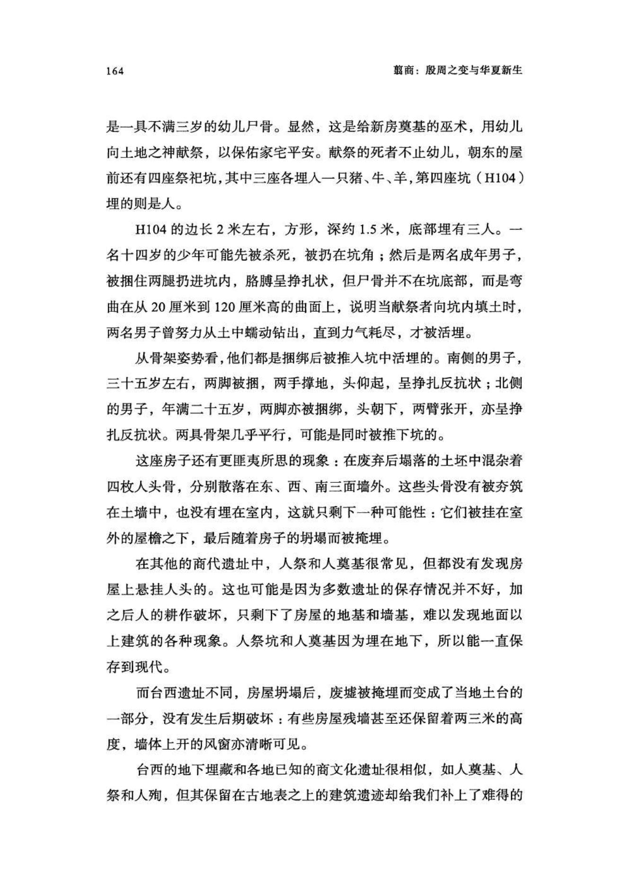
原书阅读器页 179原书物理 PDF 页 177印刷页 165
F6并不像是神庙，似乎是权力中心。它有五间互不联通的独立单间，以及一间单面无墙的半敞厦，四个房门两侧都有安放木柱的洞，发掘报告推测，这些柱子支撑的可能是某种“门楼”式的装饰结构。而那些散落的人头，当初可能就悬挂在门楼上。
那么，居住在这些房子里的是什么人？坍塌的房屋内并没有发掘出太多文物，无法提供答案，但主人的坟墓就在房子周边，它给我们提供了一幅朦胧的青铜武士群像。
青铜武士群像
台西遗址共发掘112座商墓，随葬青铜器的只有18座，平均每座埋铜器五件，说明贵族统治者在本聚落人口中只占少数。有11座使用了殉人，殉二人的有两座，其余的殉一人，共殉13人。
贵族墓葬大多有青铜兵器，如钺、戈、戟、矛、刀、镞等，有圆形的青铜泡，可能是缀在牛皮铠甲上面的，但皮甲本身已经腐朽无存。还有成套的青铜酒器，如斝、觚、爵等。稍有身份的商人都会用一套青铜酒器殉葬，只不过多数质地粗糙。可能这个据点太小且资源贫乏，贵族们的家境不算豪奢，只好专门采购成本低廉的随葬铜器，兼顾阶级礼俗的面子与生活的里子。
台西的商墓也多有“腰坑殉狗”。这里食用狗肉的风气更盛，随葬的食器中多数盛有狗肉，主要是狗头和狗腿。更体面的墓葬有殉人，男主女殉、男主男殉和女主男殉的都有，但没发现超过两名殉人的墓，毕竟，武士们的经济不太宽裕。
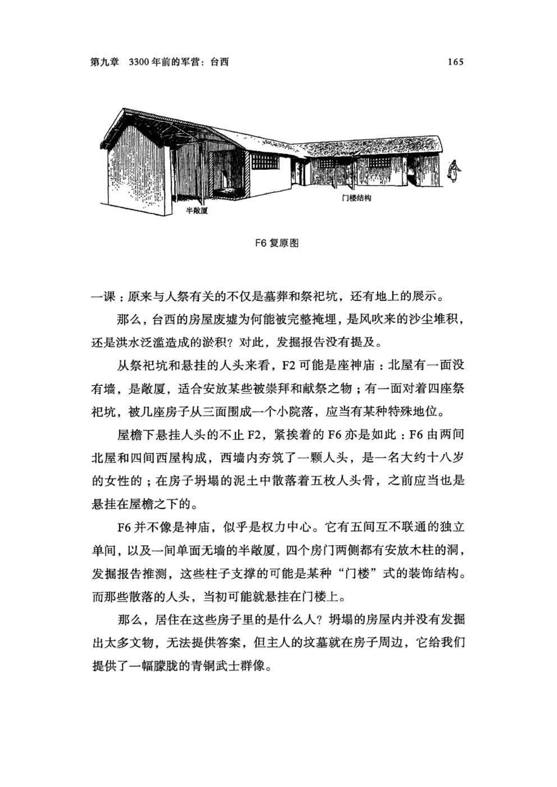
原书阅读器页 180原书物理 PDF 页 178印刷页 166
下面，我们来看几位典型的墓主。
M17，一名早夭的武士。这座墓穴比较简单，没有二层台和殉人，只在腰坑殉了一条狗。墓主是名大约二十二岁的男子，头部和胸部的骨骼大都腐朽。随葬的用具只有一只陶鬲，其他都是兵器：铜镞四枚，铜匕首、铜凿、铜戈和铜戟（矛和戈的合体）各一件。
难得的是，铜戈和铜戟都带着木柄，虽然已经腐朽，但通过痕迹测量，戟80厘米长，戈87厘米长，都是短柄徒步作战兵器。台西遗址没有发现马车遗存，还处在徒步作战时代。墓中还有玉质石头磨制的钺和斧各一把，没有使用痕迹，属于专门随葬用的。
从随葬品看，M17的墓主属于贵族统治阶层，父亲可能是拥有铜钺的军事头领，但这位墓主青年早逝，还没来得及分家独立，所以没有属于自己的奴婢随葬。除了本人拥有的兵器，父亲没舍得给他随葬太值钱的物品，但用了一枚石钺，象征死者本可能继承父亲的铜钺和军事头领身份。
M14和M17平面图（图）
M14随葬的獠牙铜钺（图）
M14，一名四十五岁左右的中年男子，军事贵族、巫医兼占卜师，身高约1.7米，骨骼粗壮，葬在一具黑漆底、红色绘图的棺木中，棺木已经朽烂。
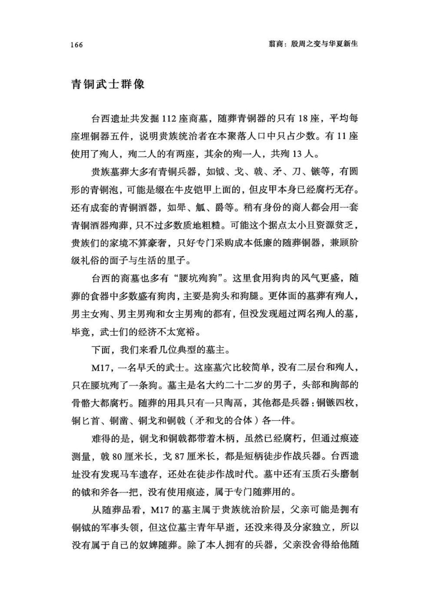
原书阅读器页 181原书物理 PDF 页 179印刷页 167
二层台上殉葬了一名二十岁左右的女子，身高接近1.5米，可能是被捆绑住手脚活埋的，还保持着张嘴呼喊的姿势。除了一支束发用的朴素无纹饰的骨笄，没有其他的首饰和饰物。
此外，二层台上还摆放着主人的随葬品：一件贴着金箔的漆盒；作为体面商人必不可少的青铜酒器组合；两件实用的煮饭炊器（陶鬲）；一把青铜大刀，连柄长约半米，刃部宽阔，刀头上翘，适合劈砍而不是刺杀；几件铜镞和一件獠牙纹饰大铜钺。
特殊的是右边的二层台上，有三片牛肩胛骨加工成的卜骨，上面凿好了占卜用的坑窝，没有刻写文字。还有小铜锯和铜凿，可能是修整牛骨的工具。
墓主左脚边有一件漆盒，里面放着一把手掌长的石头镰刀，考古学家推测，这不是农具，而是一种医用手术刀——石砭镰。古代战场上最常见的是箭伤，多数箭矢有倒钩，深陷在皮肉之中难以拔出，需要用砭镰先割开伤口，小心拔出箭头。另一种是被钝器击伤后的淤血，穿皮甲的战士常有这种伤，也要用砭镰划开皮肤，将淤血挤出来。可能古人不习惯青铜手术刀，觉得铜性恶，容易引起坏血，古老的石头工具反倒更有亲和力。
从卜骨和石砭镰看，台西M14的主人应该是一名占卜师兼军医。上古时代，这两种身份经常重合，被称为“巫医”。但这还不是他的正式身份，因为他有一件大铜钺，钺身长30多厘米，在台西遗址出土的铜钺和玉石钺中，尺寸最大。
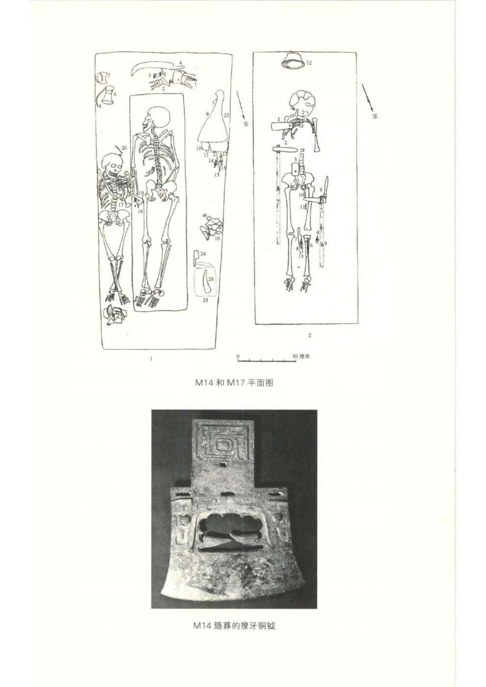
原书阅读器页 182原书物理 PDF 页 180印刷页 168
钺是军事首长的身份标志，也是献祭时砍头的工具。商代铜钺的刃部，多数并不左右对称，但砍剁时更便于用力。M14主人的铜钺形制威猛，钺体用朱红色装饰，造型酷似张开血盆大口的兽头，嘴里还有一对尖利的獴牙。
M103墓穴照片（图）
在台西墓葬中，还有一座随葬三片牛肩胛骨的M103。墓主高约1.7米，用了两名矮小的男仆殉葬，其中一名是十五岁左右的少年，双腿在膝盖以下被砍去，似乎生前就已经残疾。在甲骨文中，砍掉小腿是“刖”：对那些有可能逃跑的奴隶，砍掉小腿是最好的预防手段，但死亡率也高。据殷墟卜辞，商王会一次对多名奴隶（仆）实施刖，还要卜问在哪天砍腿的死亡率会比较低。
上古时代，用甲骨占卜是一种高深的技术，往往在家族内部传承。如果台西的占卜技术也是如此，M103的墓主很可能是M17的父亲，因为M103下葬要早一些，在发生大洪水之前。
M38，一名饮酒习兵的少妇，三十岁左右，身高约1.5米，葬在黑漆棺材中，向右侧卧，面向二层台的殉人。这名女墓主没有戴束发的笄，可能披散着头发。殉人是名十五六岁的少年，比墓主矮，也有自己的小棺材。
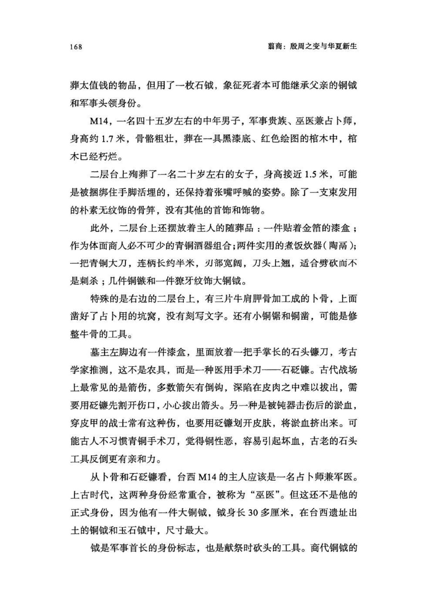
原书阅读器页 183原书物理 PDF 页 181印刷页 169
墓主的棺材中随葬了几件铜器：酒器有铜觚和铜爵各一件，但缺少铜斝，无法构成完整的“三件套”。随葬铜器用丝织品包裹着，其中还有一种特制皱纹绢——“穀”。兵器有铜镞和铜戈各一件，戈刃纤巧，长约22厘米，最宽处约5厘米。这在台西遗址乃至在整个商周青铜时代，都算是比较短小的，有可能是为女性武士特制的兵器。
〔按语：穀，榖：两个字不一样。一个左下为禾，一个为木。原书是木。如果是皱纹绢，应该是禾。待核。〕
商代女性贵族普遍饮酒，甚至参加战争。和台西遗址基本同时，殷墟妇好的墓葬也随葬了大量酒器和兵器，并且，甲骨文中还有妇好带领军队远征的记载。
这名女武士应该是一位妻子和母亲，丈夫也是台西青铜武士，但死后都是单独埋葬，各自拥有自己的殉葬奴仆。
从墓葬可见，台西聚落青铜武士属于低级贵族，普遍拥有男女奴婢，用来殉葬的只是他们拥有奴婢的一部分，而非全部。武士们都随葬有兵器和酒器，但没有农业生产工具，显然，他们不事生产，靠从周边村落征收粮食和各种产品生活。墓中的武士，各年龄段都有，还有武装的女性，他们可能属于同一个氏族。这种家族血缘单位构成商朝最基本的军事和政治单元。
台西出土箭镞及复原图（图）
台西发现的青铜箭镞数量很多，而且造型各异，明显不属同一批次铸造。台西本地没有发现铸铜作坊，武士们的铜镞等兵器应当是购买的，且来源比较广。很多商人族邑都有铸铜作坊，铜镞是最常见的产品，可见当时商人聚落之间的铜器贸易应该比较活跃。
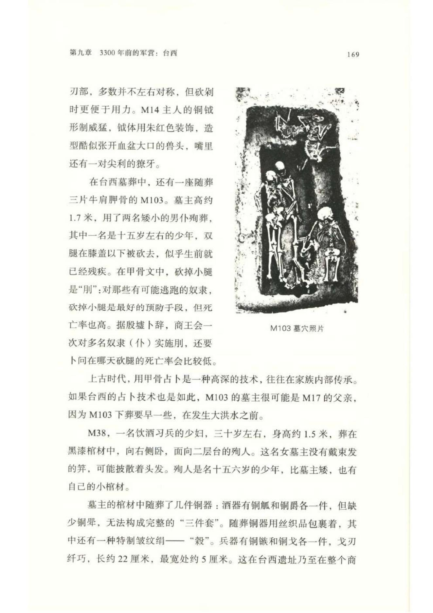
原书阅读器页 184原书物理 PDF 页 182印刷页 170
在台西墓葬区还发现了一支完整的羽箭，全长85厘米，杆已腐朽，但遗留的痕迹明显，可能是某种藤条制成，尾羽已经完全消失，发掘者绘制复原图时，参考后世文献增加了尾羽。
宿舍与伙房
住宅区的复原图可以提供一些武士们的生活信息。
发掘出的住宅区有连片的房屋七组，二十余间，所有的房间都有单独朝外的门，内部互不相连，开门的方向也不一致，一座房子的两个房间，可能一个向东开门，一个向西开门。总的来说，这片住宅区更像一组“单身宿舍”。
这些房子并不是用于日常生活的家宅，因为几乎所有房间都没有做饭的陶鬲等炊器，也没有炉灶火塘（炉灶的烧土和炭灰本是最容易保存下来的），只在住宅区最北边有两间“公共伙房”。
所以，这片住宅区可能是某种军营性质的公共建筑，供武士们定期在这里住宿和值班。他们应当另有私家住宅来安顿老人、妻儿以及奴婢和牲畜。几乎所有的青铜武士墓葬都随葬有做饭的陶鬲或铜鼎，这说明他们有自己的家庭生活，但目前尚未发掘到他们的私宅。从军营宿舍的规模判断，他们的家宅也不会太豪华，可能也是数十平方米的夯土房屋。
来看两间编号F14的“公共伙房”：两间敞厦式房屋，南室靠墙是炉灶，木柱下半截用草拌泥包裹，以防止被炉火引燃。
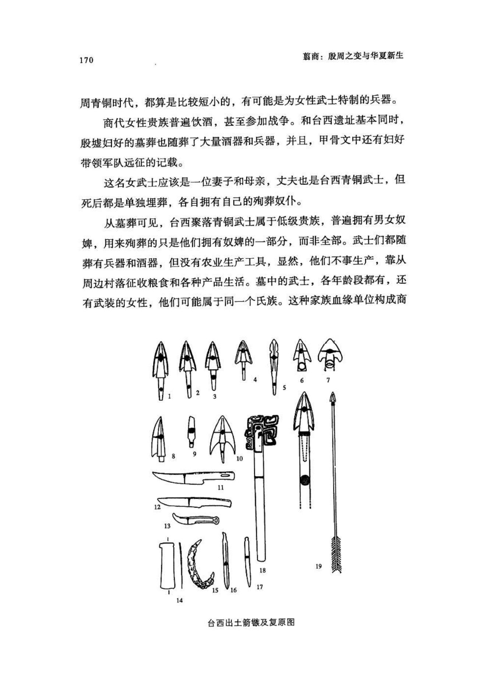
原书阅读器页 185原书物理 PDF 页 183印刷页 171
F14房屋（伙房）复原图及部分陶器（图）
两间伙房出土有大量陶制炊器，从大型盆罐，到小型的鬲、豆。其中一件大罐内有重达17斤的“灰白色水锈状沉淀物”，经化验，是制作黄酒的酵母。看来，伙房也兼作酿酒作坊。另外，出土器物中还有陶制的漏斗形器，应是灌酒之用。
伙房的几件大陶罐内，储存着很多干果，有李子和桃子的果仁、枣子以及大麻和草木樨的种子，有学者推测，它们可能是用来炮制有治疗疾病作用的药酒的。
华北亚热带时光
台西遗址出土的野生动物骨骼主要是鹿角制作的工具，其中麋鹿多于鹿鹿。从生活习性看，麋鹿主要生活在湿热地带的沼泽，廛鹿则主要在较干旱的草地和稀疏林地，这说明当时台西地区以沼泽湿地为主，间有部分干旱草地和树林。
如前文所述，在商族人崛起和建立商朝的过程中，水牛一直伴随着他们，甚至当青铜武士来到遥远的北土建立军事据点时，还驱赶着这种熟悉的家畜。台西遗址的房屋和墓葬中大都出土过水牛骨。比如，西台东侧的一座祭祀坑H50，就埋有一具完整的水牛骨架；M102也随葬有一对水牛角，以及羊肩胛骨和猪腿，用来代表猪、牛、羊"三牲”；F2东墙的南北两端，也各夯筑了一只水牛角。
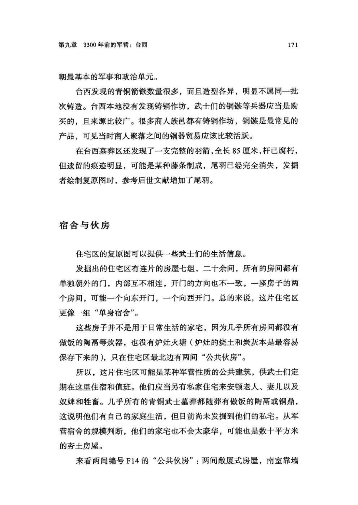
原书阅读器页 186原书物理 PDF 页 184印刷页 172
在商人的传说中，先祖王亥曾经赶着水牛群到河北有易氏之地（台西遗址以北250公里处）。但另一种重要的家畜——马，却在台西遗址难寻踪迹，只在像是指挥中心的F6西门外的垃圾坑H3中发掘出一根马的肋骨。它可能是作为食物吃剩的。[[fn:2]]马和马拉战车在中国出现得比较晚，到商代后期才普及。和台西同时的殷都虽已有马车，但台西聚落级别较低，应该还没有。
此外，M112的随葬品中有铁刃铜钺和铜瓿各一件。铜钺较小，接近成年人的手掌，主体为青铜，刃部是铁质，已经失落，但断口处还保留了较多铁质。为什么用这把没有刃部的钺随葬，毕竟碳化的铁远比青铜坚硬和锋利？这不好解释。可能是铁刃过于珍贵，后人敲了下来继续使用，只用青铜钺体给先人随葬。铜瓿则比较精致，做工比台西其他墓葬中的铜器都要好。看来，这位墓主是台西最富裕的人物。这座墓是1972年农民取土时挖出的，没有经过专业发掘，只知道墓葬有殉人，很多信息已经无法复原。
曾有学者认为，商代还没有冶铁和锻铁技术，这把铜钺的铁刃应该是陨铁。但也有学者从其所含的微量元素推测，这不是陨铁，而是人工制作的熟铁。在“伙房”F14前面，出土有一些冶炼过的残铁渣和两小块铁矿石，显示台西人也许已经掌握初步的炼铁技术。但因为没有发掘到冶铁和锻铁的工作区与产品，目前还无法确定。
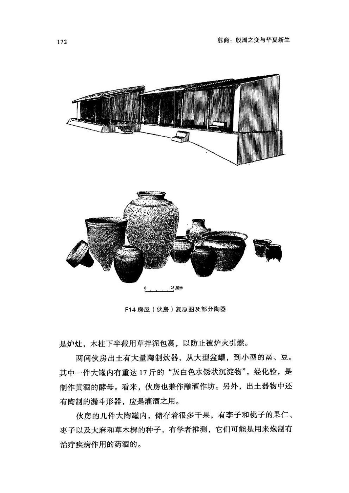
原书阅读器页 187原书物理 PDF 页 185印刷页 173
H50祭祀坑中的水牛骨架（图）
台西遗址并非只有青铜武士，还有普通农民。发掘虽集中在“贵族营区”极为有限的空间，但还是在最边缘处挖出了一座穷人的房基，这便是F10。
F10在武士营房后面十几米处，东西长2.6米，南北宽1.6米，室内只有4平方米的空间，极为狭窄局促。它的建筑方法是，先在地上挖出半米深的半地穴，形成居室的轮廓，然后加盖草木窝棚。
室内屋角有一直径和深均50厘米的圆形储物坑，里面有做饭的陶鬲和残破的石质农具。储物坑的旁边是灶坑，有烧土和灰烬，“除去藏穴和灶坑以外，仅能容两人栖息。这种简陋的房屋，自然与居住者社会地位的低下有关”。这是在新石器和青铜器时代极为常见的农舍。
农民的墓葬散布在青铜武士营区周围，大多没有随葬品，或只有一两件粗糙的陶器。台西目前发掘112座大小墓葬，“人架除完整的和腐朽成粉的以外，还有10座墓人架的股骨或胫骨全部或一半被截去。其中有的截面上有刀砍或锯的痕迹，似乎是受过刖刑”。
被砍掉腿的人数占墓葬总数的近十分之一，考虑到有些墓葬尸骨已完全腐朽，无法观察和统计，实际比例应当更高。这也是青铜武士统治农民的方式之一。
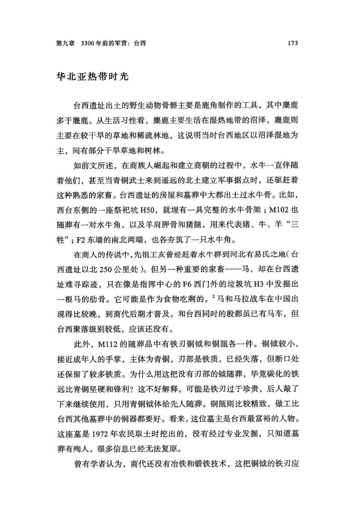
原书阅读器页 188原书物理 PDF 页 186印刷页 174
台西遗址还出土了大量用石头和骨头磨制的箭头（镞），有些是底层农民的捕猎工具，有些则属于青铜武士。这些贵族一般只用三四枚青铜镞随葬，看来再多就负担不起了。
台西遗址没有留下文字，青铜器上也没有族徽铭文，所以我们无法知道台西商人氏族的名称，也不知道他们如何称呼驻防的这片土地。商人把定居点叫作邑，台西遗址则是一座湮没在历史中的无名之邑：它只是一座规格不太高的军事聚落，主人也只是没有留下姓名的地方军事贵族，在他和安阳殷都的商王之间，应该还隔着至少一个指挥层级。
虽然距离殷都有些远，但台西商人并不孤立，他们使用的铜器和殷都完全同步，属于典型的殷都初期风格，礼器的花纹繁多，几乎遍布全身，而早商郑州和盘龙城的铜礼器大多只有一条纹饰窄带。这说明台西商人和都城的联系很密切，商王朝也比较重视这些北方边疆的守卫者。
这座军事营地后来被废弃了。发掘显示，部分房屋毁于火灾，比如最大的连体建筑F6。但这并不意味着营地被废弃全因火灾，即使被火焚毁，重建也不是难事，况且这座营房本就是在水灾之后重建起来的。
被废弃的真正原因，应该是青铜武士们移防了。在盘庚迁都之后，商朝对黄河北岸的统治日渐稳固，边防线也就逐渐向北推移。到殷墟后期，北方防线已经推进到今河北定州（距离台西遗址约80公里），甚至更北。
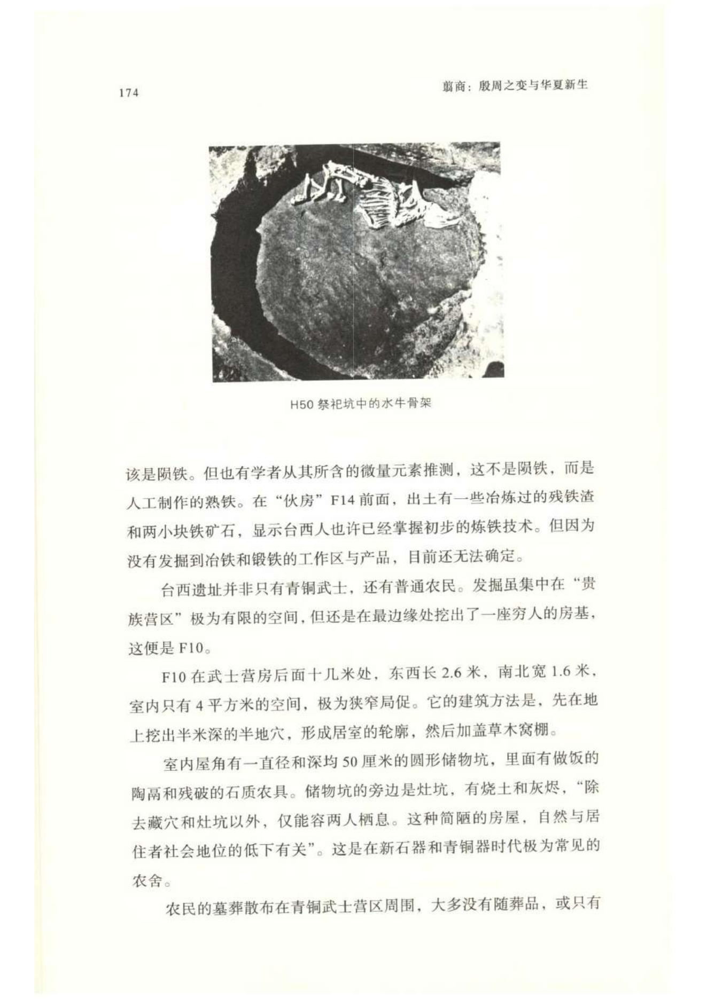
原书阅读器页 189原书物理 PDF 页 187印刷页 175
或许，部分房屋的焚毁被台西首领解读为神降的启示，故而放弃旧居，继续向北迁徙。在青铜武士匆匆离去时，有些笨重物品被放弃，比如公共伙房内几个装着酿酒原料的大陶罐。对于周围的农民而言，军营里遗留的物品颇有价值，看来他们并没有进入这座悬挂着人头的营地，于是，房子在年久失修中陆续坍塌，最后被掩埋了起来。
与此同时，殷商王朝正在走向中兴繁荣。
附录：北土食人部落
在燕山南麓，有一个经常吃人的聚落，这便是今北京昌平区的张营遗址。[[fn:3]]
在相当于夏朝一二里头时期，张营聚落已经存在，但那个阶段的遗迹很少。到了早商后期（张营遗址三期，二里冈文化后期），张营出现了一些商族风格的陶器，比如所谓“瘪裆”造型的陶鬲，但仍以本地陶器为主流。
新的改变是铜器制造。张营遗址发掘出的石头和陶制的铸铜范皆为制作小件铜器的双面范，如跳、针、锥、鱼钩和小刀。此外，还有铜制的耳环、凿、鱼镖和梳子。有炼铜的铜渣出土，说明本地用铜矿石冶铸。但没有发现任何铜容器的铸范和实物，也没有铜戈、铜矛和铜钺等兵器。检测发现，多数铜器是铜锡合金，基本没有铅，但这种合金硬度较高，只适合制作小件铜器。可能张营人的铜器以自用为主，外销较少。
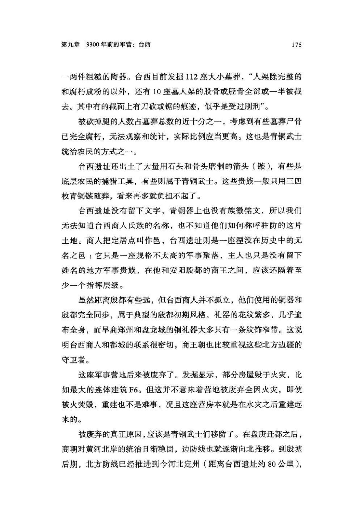
原书阅读器页 190原书物理 PDF 页 188印刷页 176
张营聚落只发现几座很小的房屋遗址，没有明显的阶层分化，仍处在部落生活阶段。截至目前，发掘122座灰坑（垃圾坑），其中，有12座埋有零碎的和残破的人骨，[[fn:4]]跟猪、牛、羊、鹿的骨头混杂在一起，没有完整骨架或肢体，头骨也都被砸开。
两件铸造箭镞的石范：分别只能铸造一枚和两枚箭镞。西安老牛坡二期发现的陶范一次至少能铸造五枚箭镞，郑州商城的陶范一次能铸造十几枚，张营聚落规模较小，铜器产量也低得多（图）
有些人骨制成的工具，主要是用股骨（大腿骨）制作的骨锥，它们应该是用坏之后被扔进垃圾坑的。此外，在F1中还发现一块人股骨，可能也是制作工具用的。
在发现的60块人骨中，只有两块属于夏末商初（张营二期），其余属于商代中前期（张营三期）。发掘报告推测，灰坑H84中的人骨至少来自七个人，H105至少来自两个人。人骨过于零碎，多数无法鉴定年龄和性别，只有几枚牙齿属于一名二十岁左右的青年。
有些骨头，特别是股骨上，有敲砸和刀砍断痕，可能是敲骨吸髓所致。约一半骨头被烧过，应是烧烤食用。发掘报告推测，当时这里应该存在食人风俗，战俘或奴隶可能会被杀死后肢解分食。
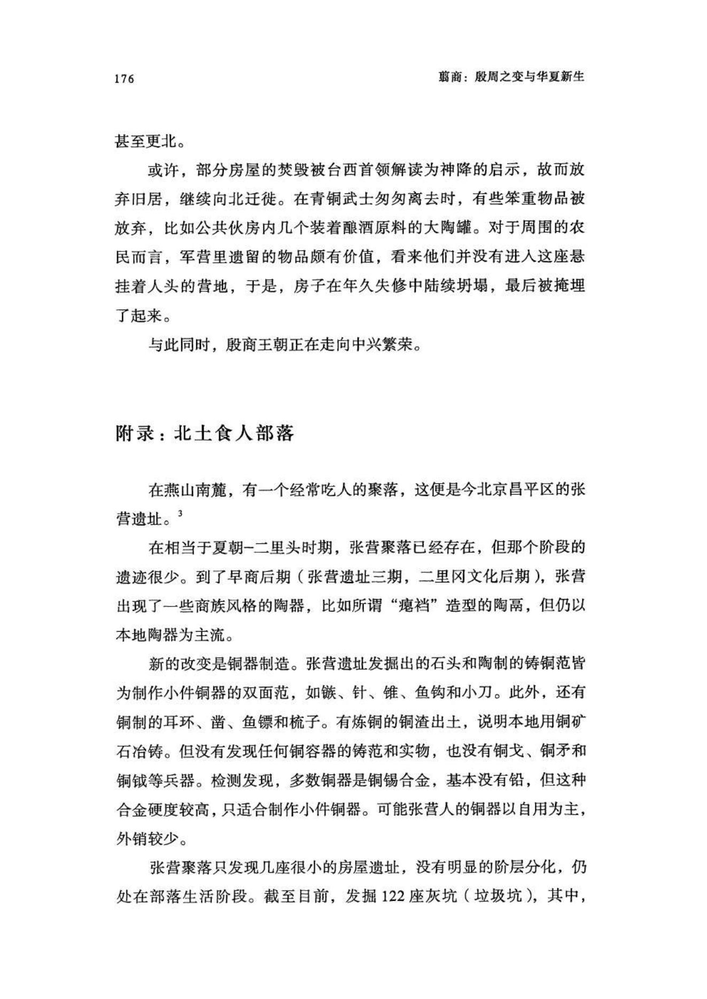
原书阅读器页 191原书物理 PDF 页 189印刷页 177
三期（商代中前期）的张营人虽然能够冶铸铜器，但还无法完全取代石器。发掘出的最主要的农具和工具都是石头做的：石斧32件，石铲13件，石镰56件，石刀23件，石锛10件，石镞10件，石磨盘11件，石磨棒14件。除了饲养家畜，狩猎占的比重也比较大，灰坑中有较多鹿类的骨头，还有虎、豹、棕熊、马、驴等。
那么，在张营人势力最盛、食人行为最多的三期，他们和商朝是什么关系？
这个阶段，早商王朝的扩张正达到顶点，但张营聚落到郑州商城的路程超过750公里，比湖北盘龙城还要远二分之一，所以很难断言早商王朝的势力能直接控制这里。不过，冶铸铜技术和商式陶器显示，张营人明显受到了商文化的影响。
张营人的食人风习应该是自身固有的传统，和商族关系不大，但新传来的铸铜技术却可以让他们更容易击败周边部族，使得食用人骨的数量大增。这是一个被技术改变过的人群，但终究没有扩张成为早期国家。看来张营人比较安于部落生活，后来又迁移到了别处，消失在三千多年前的迷雾中。
对于蛮荒的上古时代，我们现代人能理解的实在很少。
注释
1河北省文物研究所：《藁城台西商代遗址》，文物出版社，1985年。以下有关
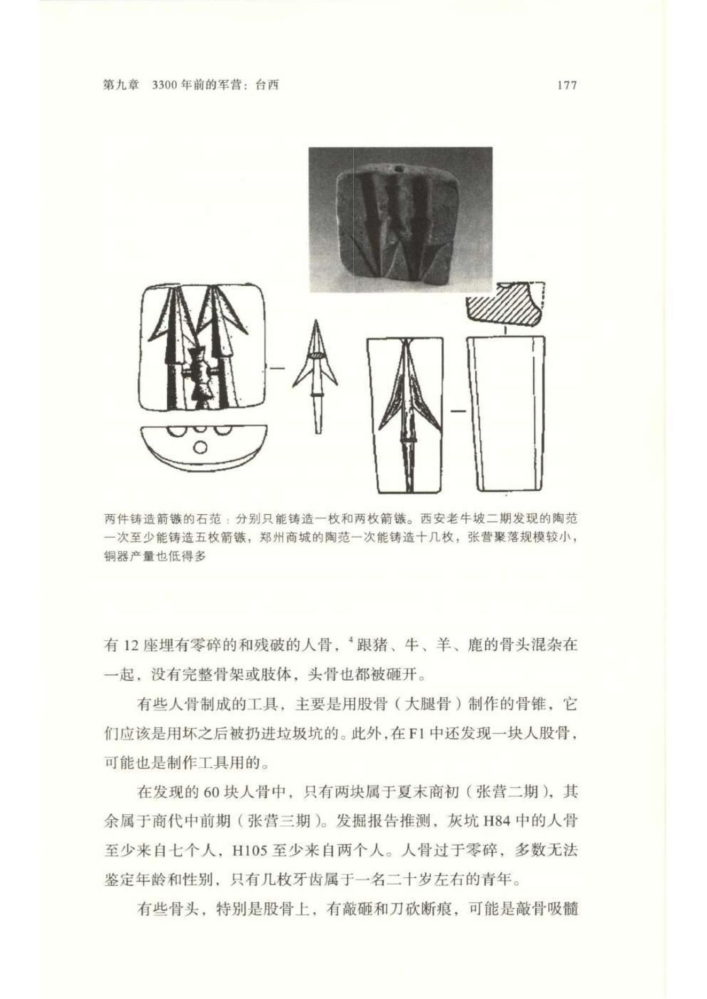
原书阅读器页 192原书物理 PDF 页 190印刷页 178
该遗址的基本信息和图片，未注明出处的，皆出自该书，不再详注。
2一同出土的有猪的下颗骨，以及一具老年妇女的零散骨骼：人头和一条腿已经脱离身体。她大概是一名为军营服劳役的土著农妇，可能因触怒某位青铜武士而被砍成数段，然后被扔进了垃圾坑中。
3北京市文物研究所：《昌平张营》，文物出版社，2007年。有关该遗址的基本信息和图片，未注明出处的，皆出自该书，不再详注。
4这些含人骨的灰坑编号是：29、33、62、70、78、83、84、99、103、105、106、107。
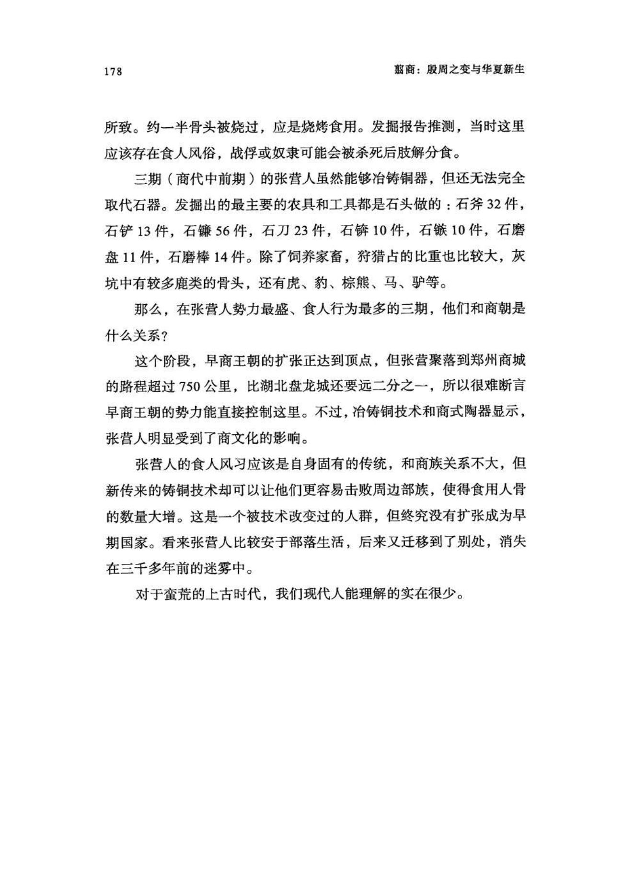
原书阅读器页 193原书物理 PDF 页 191印刷页 179
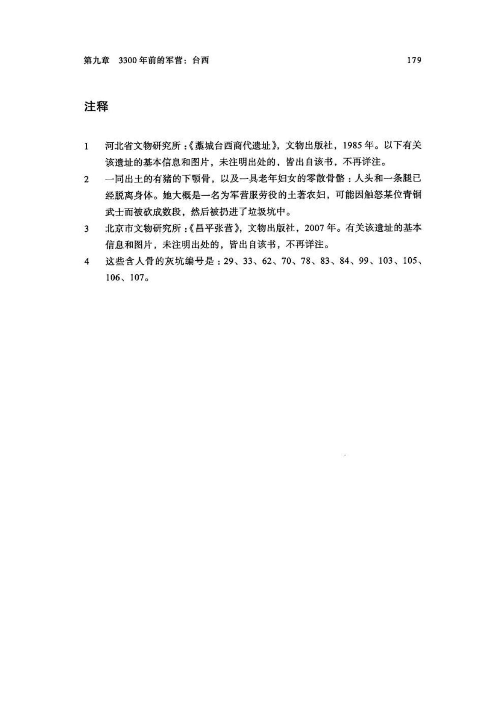
原书阅读器页 194原书物理 PDF 页 192印刷页 180
编辑札记
标记
先在正文中选择文字，再输入拼音；可用“拼音；简注”。